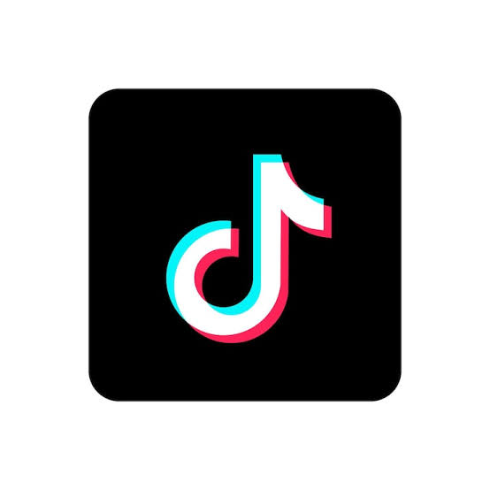
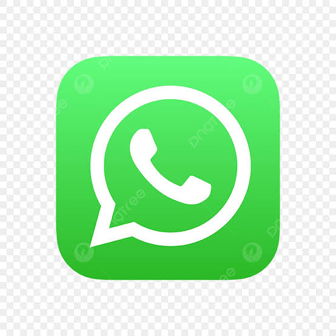

Liquid Glass Portfolio
Halo, Saya Skyy Host
Saya membuat website modern dengan tampilan liquid glass, animasi 3D, desain elegan, warna abu hitam premium, dan layout seperti aplikasi.
Saya membuat website modern dengan tampilan liquid glass, animasi 3D, desain elegan, warna abu hitam premium, dan layout seperti aplikasi.
Saya tertarik dengan dunia website, desain UI, animasi interaktif, dan tampilan modern. Saya suka membuat halaman yang rapi, elegan, mudah digunakan, dan nyaman dilihat di HP maupun laptop. Website ini dibuat sebagai portfolio pribadi untuk menampilkan identitas, skill, project, sosial media, dan kontak secara lebih profesional.
Fokus saya adalah membuat website personal, landing page, portfolio, dan tampilan aplikasi sederhana yang responsive serta terlihat modern.
Saya menyukai frontend development, desain antarmuka, efek glass, animasi halus, dan tampilan yang terasa seperti aplikasi premium.
Tujuan saya adalah membuat project yang tidak cuma berfungsi, tapi juga punya tampilan kuat, rapi, dan bisa memberikan kesan pertama yang bagus.
Skill utama yang saya gunakan untuk membuat website modern, interaktif, dan responsive. Semua bagian dibuat menggunakan HTML, CSS, dan JavaScript tanpa framework, biar dasar pembuatannya jelas dan tidak cuma menumpang template seperti penumpang gelap.
Membuat struktur halaman website seperti navbar, section, card, form, dan footer.
Mengatur warna, layout, animasi, responsive design, glass effect, dan tampilan 3D.
Membuat interaksi seperti tombol musik, efek klik, reveal scroll, dan gerakan kartu.
Bagian ini bisa kamu isi dengan project yang pernah kamu buat. Untuk sekarang, contoh project dibuat agar halaman portfolio terlihat lengkap dan panjang ketika discroll.
Website pribadi dengan desain liquid glass, animasi 3D, tombol musik, form kontak, dan link sosial media.
HTML CSS JSHalaman promosi produk atau jasa dengan tampilan modern, section rapi, tombol aksi, dan desain responsive.
UI DesignTampilan profil seperti aplikasi mobile dengan kartu interaktif, gambar profil, dan efek glass yang elegan.
FrontendWebsite ini dibuat panjang agar pengunjung bisa scroll ke bawah dan membaca informasi secara bertahap. Bagian perjalanan ini menjelaskan proses belajar dari dasar sampai membuat portfolio interaktif.
Saya mulai dari memahami struktur dasar website, seperti heading, paragraf, gambar, link, section, form, dan cara menyusun konten agar mudah dibaca.
Setelah struktur selesai, saya belajar mengatur warna, ukuran, jarak, layout, border-radius, shadow, animasi, dan responsive design.
JavaScript digunakan untuk membuat halaman lebih hidup, seperti tombol play musik, efek ripple saat klik, animasi reveal ketika scroll, dan kartu profil 3D.
Semua skill digabungkan menjadi website portfolio dengan tema liquid glass, tampilan abu-hitam elegan, halaman detail profil, dan form kontak.
Saya berusaha membuat website yang bukan hanya bisa dibuka, tapi juga memiliki tampilan yang enak dilihat, struktur yang jelas, serta desain yang bisa dipahami pengunjung. Tampilan yang bagus bisa membuat portfolio terlihat lebih serius dan profesional.
Menggunakan tema abu-hitam, efek kaca, blur halus, border transparan, dan shadow lembut agar tampil elegan.
Website bisa menyesuaikan ukuran layar laptop dan HP, jadi tetap rapi saat dibuka dari berbagai perangkat.
Terdapat animasi scroll, kartu profil bergerak, ripple klik, tombol musik, dan link sosial media yang bisa langsung dibuka.
Setiap bagian website dibuat bertahap agar lebih mudah dikembangkan. Mulai dari membuat struktur, mempercantik tampilan, menambahkan interaksi, lalu menghubungkan form kontak ke email.
Layout dibuat dengan beberapa section seperti home, tentang, skill, project, perjalanan, sosial media, dan kontak.
Efek kaca dibuat menggunakan background transparan, blur, border tipis, shadow, dan warna gelap agar terlihat premium.
Form kontak dibuat agar pengunjung bisa mengirim pesan langsung ke email pemilik website tanpa harus membuka aplikasi email manual.
Kalau kamu ingin bekerja sama, bertanya tentang project, atau ingin membuat website dengan tampilan modern, silakan kirim pesan lewat form di bawah ini.

Sosial Media
Klik salah satu sosial media di bawah untuk membuka akun. Ganti link-nya dengan akun kamu sendiri agar tidak nyasar ke dunia antah-berantah internet.
Instagram
@kyyloplop7

TikTok
@kyy_real0

WhatsApp
Chat langsung